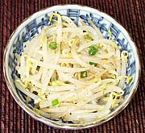

|
Bean Sprout Salad #1Korea - Sookju Namul | ||||
| Makes: Effort: Sched: DoAhead: |
6 ban * 15 min Yes |
This is one of the most common of the many tiny banchan side dishes served with a Korean meal. I can't remember any meal in a Korean restaurant at which a bean sprout salad was not served. In the quantities usually served with a Korean meal this recipe will easily serve 6. | |||
|
12 1/2 5 2 1 2/3 1/2 1/4 1/2 |
oz t c cl t t t T |
Bean Sprouts (1) Salt Water Scallions Garlic Sesame Oil, dark Salt Pepper black Toasted Sesame (2) |
Make - (15 min - or 1 hour (see Note-1))
|